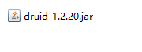

Connection对象是重量级对象，创建Connection对象就是建立两个进程之间的通信，非常耗费资源。一次完整的数据库操作，大部分时间都耗费在连接对象的创建。 第一个问题：每一次请求都创建一个Connection连接对象，效率较低。 第二个问题：连接对象的数量无法限制。如果连接对象的数量过高，会导致mysql数据库服务器崩溃。
提前创建好N个连接对象，将其存放到一个集合中（这个集合就是一个缓存）。 用户请求时，需要连接对象直接从连接池中获取，不需要创建连接对象，因此效率较高。 另外，连接对象只能从连接池中获取，如果没有空闲的连接对象，只能等待，这样连接对象创建的数量就得到了控制。
连接池有很多，不过所有的连接池都实现了 javax.sql.DataSource 接口。也就是说我们程序员在使用连接池的时候，不管使用哪家的连接池产品，只要面向javax.sql.DataSource接口调用方法即可。
另外，实际上我们也可以自定义属于我们自己的连接池。只要实现DataSource接口即可。
对于一个基本的连接池来说，一般都包含以下几个常见的属性：
以上这些属性是连接池中较为常见的一些属性，不同的连接池在实现时可能还会有其他的一些属性，不过大多数连接池都包含了以上几个属性，对于使用者来说需要根据自己的需要进行灵活配置。
市面上常用的数据库连接池有许多，以下是其中几种：
第一步：引入Druid的jar包

第二步：配置文件 在类的根路径下创建一个属性资源文件：jdbc.properties
url=jdbc:mysql://localhost:3306/jdbc
username=root
password=1234
driverClassName=com.mysql.cj.jdbc.Driver
initialSize=5
minIdle=10
maxActive=20
第三步：编写代码，从连接池中获取连接对象
// 读取属性配置文件
InputStream in = DruidConfig.class.getClassLoader().getResourceAsStream("jdbc.properties");
Properties props = new Properties();
props.load(in);
// 创建连接池
DataSource dataSource = DruidDataSourceFactory.createDataSource(props);
Connection conn = dataSource.getConnection();
第四步：关闭连接
仍然调用Connection的close()方法，但是这个close()方法并不是真正的关闭连接，只是将连接归还到连接池，让其称为空闲连接对象。这样其他线程可以继续使用该空闲连接。
第一步：引入jar包
第二步：编写配置文件
在类的根路径下创建一个属性资源文件：jdbc2.properties
jdbcUrl=jdbc:mysql://localhost:3306/jdbc
username=root
password=1234
driverClassName=com.mysql.cj.jdbc.Driver
minimumIdle=5
maximumPoolSize=20
第三步：编写代码，从连接池中获取连接
InputStream in = HikariConfig.class.getClassLoader().getResourceAsStream("config.properties");
props.load(in);
HikariConfig config = new HikariConfig(props);
DataSource dataSource = new HikariDataSource(config);
Connection conn = dataSource.getConnection();
第四步：关闭连接（调用conn.close()，将连接归还到连接池，连接对象为空闲状态。）